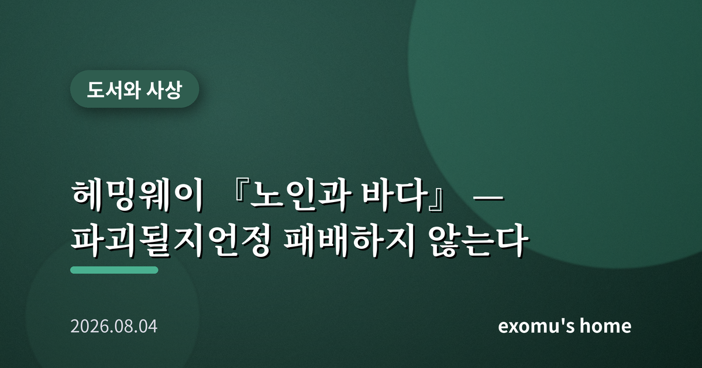
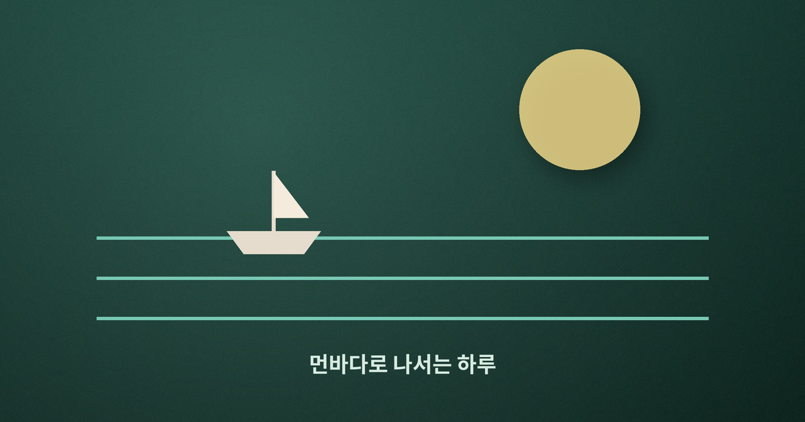
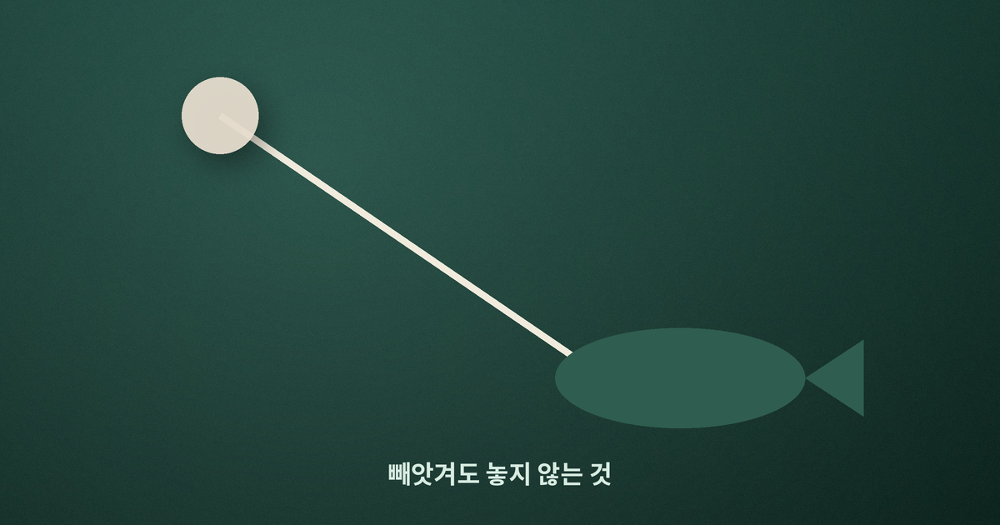
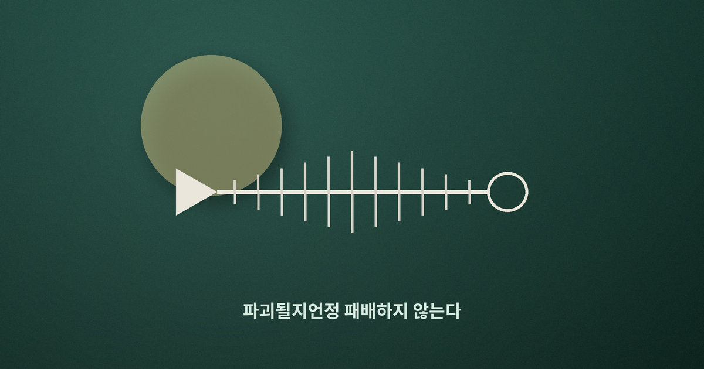
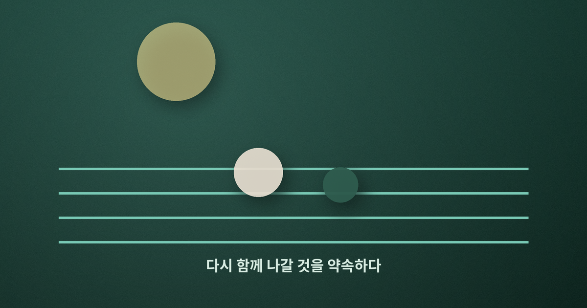

헤밍웨이 『노인과 바다』 — 파괴될지언정 패배하지 않는다

나는 오랫동안 『노인과 바다』를 성공에 관한 이야기로 오해했다. 거대한 물고기를 잡는 노인의 사투. 그런데 다시 읽으며 깨달았다. 이건 이기는 이야기가 아니라, 지고도 무너지지 않는 법에 관한 이야기였다.
84일의 빈 그물
늙은 어부 산티아고는 84일 동안 물고기를 한 마리도 잡지 못했다. 마을 사람들은 그를 운이 다한 사람으로 여기고, 곁을 지키던 소년마저 부모의 성화에 다른 배로 옮겨 간다. 그럼에도 노인은 85일째 홀로 먼바다로 나간다. 여기서 이미 이야기의 핵심이 드러난다. 산티아고를 움직이는 것은 성공의 계산이 아니라, 어부라면 바다로 나가야 한다는 자기 존재에 대한 충실함이다. 결과가 보장되지 않아도 자기가 누구인지에 따라 행동하는 사람. 나는 이 대목에서 존엄이라는 단어를 떠올린다.

사흘간의 사투, 그리고 상어
먼바다에서 노인은 마침내 배보다 큰 청새치를 낚는다. 사흘 밤낮에 걸친 줄다리기 끝에 물고기는 그의 것이 된다. 그러나 승리의 기쁨은 짧다. 돌아오는 길에 피 냄새를 맡은 상어 떼가 물고기를 뜯어 먹기 시작한다. 노인은 작살로, 노로, 칼로 맞서 싸우지만 하나씩 무기를 잃고, 항구에 닿았을 때 물고기는 앙상한 뼈만 남는다. 잡은 것을 다 빼앗긴 셈이다.
바로 이 지점에서 소설의 유명한 문장이 태어난다. 노인은 스스로에게 말한다. 인간은 파괴될 수 있을지언정 패배하지는 않는다고. 나는 이 말을 오래 곱씹었다. 결과만 보면 노인은 완패했다. 빈손으로, 아니 뼈만 든 채 돌아왔으니까. 그런데도 패배가 아니라니, 그렇다면 이길과 질의 기준이 우리가 생각하는 것과 다른 자리에 있다는 뜻이다.

싸우는 내내 노인은 물고기를 미워하지 않는다. 오히려 형제라 부르고, 너는 나를 죽이려는 것이 아니라 그저 너답게 사는 것이라 말한다. 상어를 향해서도 분노보다는 담담한 대결의 태도를 지킨다. 나는 이 대목이 소설의 가장 조용한 힘이라고 느낀다. 자신을 무너뜨리는 상대 앞에서도 존엄을 잃지 않는 것, 미움에 삼켜지지 않고 끝까지 자기 자리를 지키는 것. 헤밍웨이는 짧고 마른 문장으로 그 태도를 그린다. 감정을 과장하지 않기에 오히려 더 깊이 남는다.
결과가 아니라 태도가 남는다
어떤 철학자들은 인간이 무의미해 보이는 세계 속에서도 자신의 태도만은 스스로 선택할 수 있으며, 바로 그 선택에 인간의 존엄이 있다고 보았다. 산티아고의 싸움이 꼭 그렇다. 그는 상어를 이길 수 없다는 것을 알면서도 끝까지 싸운다. 이길 수 없는 싸움에서 어떻게 싸우느냐가 그 사람이 누구인지를 결정하기 때문이다. 물고기는 빼앗겼지만, 끝까지 자기 자리를 지킨 태도는 누구도 빼앗지 못했다.
나는 여기서 의미라는 것이 결과에 붙어 있지 않다는 사실을 배운다. 우리는 흔히 성취해야 의미가 있다고 여긴다. 그러나 노인은 아무것도 가져오지 못하고도 무언가를 증명했다. 자기 자신에게, 그리고 그를 기다리던 소년에게. 다음 날 아침 소년이 다시 노인의 곁으로 돌아와 함께 나갈 것을 약속하는 장면은, 그 증명이 헛되지 않았음을 조용히 말해 준다.

이 소설이 오래 읽히는 이유도 여기에 있다고 나는 생각한다. 산티아고의 바다는 특별한 무대가 아니다. 누구에게나 자기만의 바다가 있다. 오래 매달렸지만 결과가 초라했던 일, 온 힘을 쏟았는데 남에게 뜯겨 나간 성과, 알아주는 이 없이 홀로 감당한 시간. 노인의 이야기는 그 모든 빈손의 순간에 조용히 말을 건넨다. 무엇을 가져왔느냐가 아니라 어떻게 견뎠느냐가 너를 말해 준다고. 그래서 이 짧은 소설은 성공담이 아니라, 지는 법을 아는 사람의 품격에 관한 이야기로 남는다.

나의 84일에게
책을 덮으며 나는 내 안의 빈 그물을 생각했다. 아무리 애써도 결과가 나오지 않는 시기, 남들이 운이 다했다고 여기는 순간이 누구에게나 있다. 노인은 그럴 때 계산을 멈추고 그저 자기 일을 하러 바다로 나갔다. 결과는 상어가 가져가더라도, 어떻게 싸웠는가는 온전히 내 것으로 남는다. 그 사실 하나가, 오늘의 나에게도 다시 노를 젓게 한다.